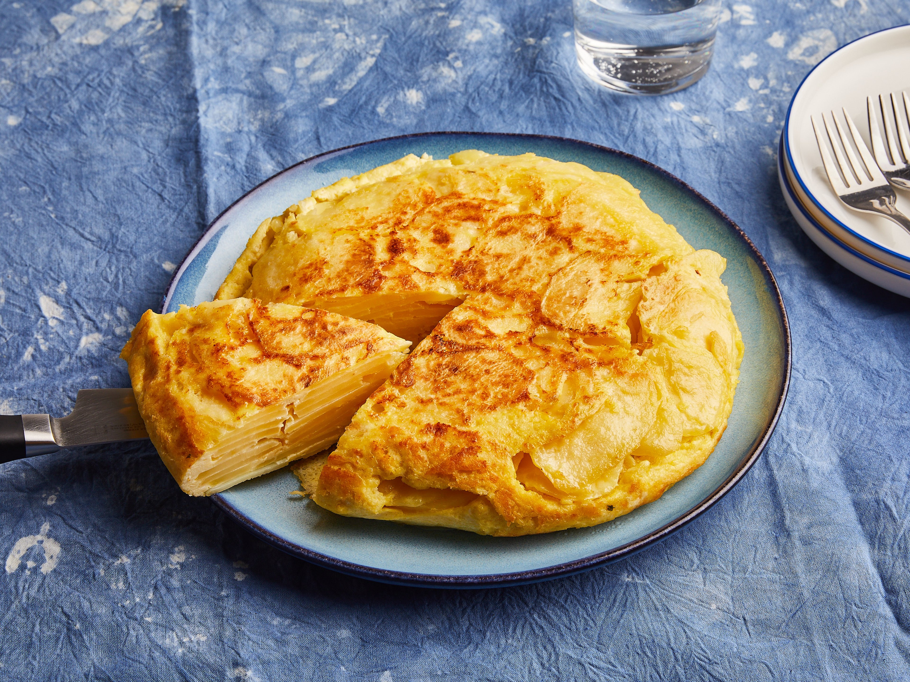

Back to Kitchen
Tortilla

Thin, circular unleavened flatbread from Mexico and Central America originally made from maize hominy meal, and now also from wheat flour.
Ingredients
- 250g plain flour, plus a little more for dusting
- 2 tbsp vegetable oil
- ½ tsp fine salt
Steps
- Combine the flour, vegetable oil and salt in a bowl. Pour over 150ml warm water and knead to bring the mixture together. Remove from the bowl and knead on a lightly floured work surface for around 5 mins until you make a soft, smooth ball of dough. Cover with a clean tea towel and rest for at least 15 mins before rolling out.
- Cut the dough into 6 equal pieces (about 75g each). Roll out each ball of dough as thinly as possible on a floured work surface. They should make rounds about 20 cm wide, 2mm thick.
- Heat a large frying pan over a medium-high heat. Cook the tortillas for 1-2 mins on each side until golden brown and toasted. Wrap them in foil and cover in a tea towel to keep warm, while you cook the rest. Keeps for two days well wrapped, or cool, wrap and freeze for up to three months.
Back to Kitchen